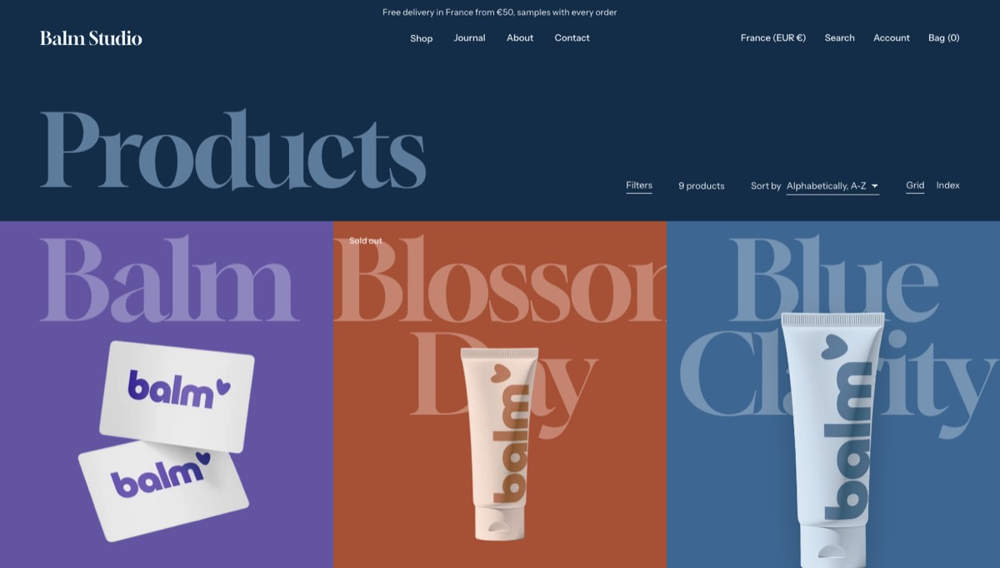
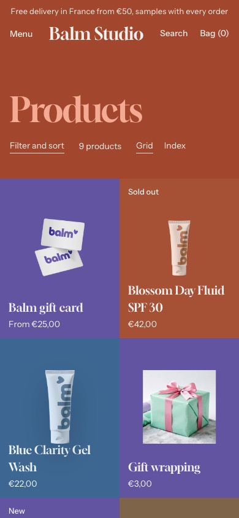
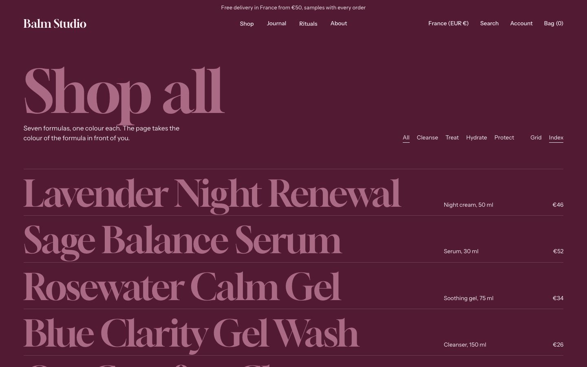
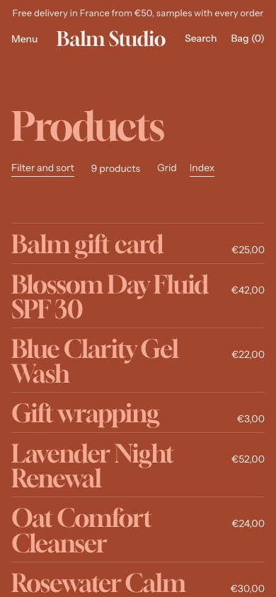
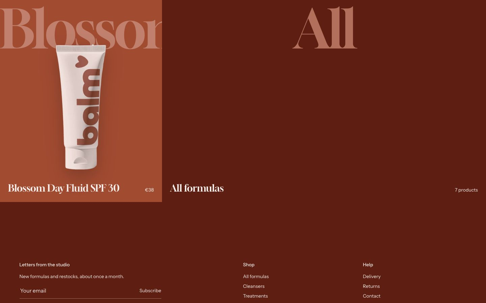
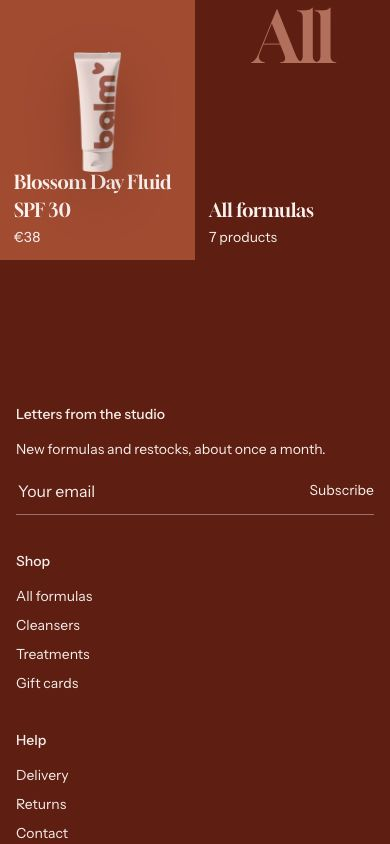

Collection
The collection page: a head with the title and a menu of collections, then the products as tiles or as an index.
WherePart of the collection template.






What it is for
Every collection page. Each tile wears the color of its product, and the page takes the color of the tile in view as visitors scroll.
How it works
The Menu of Collection navigation shows a menu of collections as words beside the
title, the current one underlined: the demo uses a menu named shop-filters (All, Cleanse, Treat, Hydrate,
Protect). Default view on desktop and Default view on mobile choose Grid, tiles in the color of each
product, or Index, rows that preview each product as you point at it; Let visitors switch between Grid and
Index adds the two words to the tools. The products follow the sort order of the collection set in your admin.
Filters come from Shopify's Search and Discovery app.
Show the product rating prints the rating of each product above its name, with the number of reviews (see Product ratings). Show color swatches draws the values of its color option as swatches, each a link to its variant. Both are off on the demo.
Show an All tile closes the grid with a tile on the background of the page, its first word set large
like the names of the tiles, that links to all products: All tile collection (empty:
/collections/all) and All tile label (All formulas on the demo). It fills the empty cells
of the last row, for the column count of each device and the one a visitor picks, and hides when the row is full; it
never shows on its own collection.
Content tips
- Give each collection its two colors (
custom.background_colorandcustom.background_color_end) to tint its head. - Set the order of the products in your admin (Products, Collections, Sort): the page keeps it.
Settings
Section settings (74)
| Setting | Values | Default | Notes |
|---|---|---|---|
| Color scheme | Color scheme | Scheme 1 | Shown when Surface is Color scheme or Surface is Image. |
| Section width |
| Theme default | Theme default follows Theme settings, Layout. Full width with margins keeps the side margins set there, Page width stops at the page width. |
| Section background | |||
| Surface |
| Field | Field, Deep and Paper follow the tone of the page. Color scheme and Image use the section's color scheme. |
| Image settings | |||
| Background image | Image | Empty | To vary this without editing the theme, create the metafield first. Go to Settings → Custom data → Shop. Name it "Background image", set namespace and key to "shop.background_image", and choose type "File". Then come back here and connect it with the dynamic source icon. It cannot be connected until it exists. Shown when Surface is Image. |
| Background image (mobile) | Image | Empty | Optional. Used below 768px. When empty, the desktop background image is used. Shown when Surface is Image. |
| Banner | |||
| Show collection title | Checkbox | On | |
| Show description | Checkbox | On | |
| Show collection image | Checkbox | On | |
| Banner image | Image | Empty | Shopify doesn’t keep a focal point on the collection image. To control the framing, pick the image here or in the custom.banner_image metafield: the focal point set in Files is then used. Shown when Show collection image is on. |
| Banner position (desktop) |
| Focal point | Focal point follows the focal point of the image. Without one, the image stays centered. Shown when Show collection image is on. |
| Banner position (mobile) |
| Focal point | Shown when Show collection image is on. |
| Image banner height (desktop) | 160 to 560 px, step 20 | 280 px | |
| Image banner height (mobile) | 120 to 400 px, step 20 | 180 px | |
| Overlay opacity (image banner) | 0 to 90%, step 5 | 30% | |
| Hover effect |
| None | Shown when Show collection image is on. |
| Position on the image (desktop) |
| Center | Shown when Show collection image is on. |
| Position on the image (mobile) |
| Center | Shown when Show collection image is on. |
| Padding on the image (desktop) | 0 to 80 px, step 4 | 24 px | Shown when Show collection image is on. |
| Padding on the image (mobile) | 0 to 48 px, step 4 | 24 px | Shown when Show collection image is on. |
| Text backdrop |
| Paper | Shown when Show collection image is on. |
| Collection navigation | |||
| Menu | Menu | Empty | A menu of collection links, shown as words beside the title. The link of the current collection is underlined. |
| Grid | |||
| Products per page | 4 to 48, step 4 | 12 | |
| Pagination |
| Page numbers | Load more and Infinite scroll add the next page under the grid, with a Showing X of Y counter. Infinite scroll loads three pages on its own, then shows the Load more button so the footer stays reachable. |
| Columns (desktop) | 1 to 4 | 2 | |
| Columns (mobile) |
| 1 | |
| Card gap (desktop) | 0 to 80 px, step 4 | 32 px | |
| Card gap (mobile) | 0 to 48 px, step 4 | 16 px | |
| Filters and sorting | |||
| Enable filters | Checkbox | On | |
| Filter layout |
| Column (desktop) + drawer (mobile) | |
| Show counts on filter values | Checkbox | On | Appends the number of matching results after each filter value, for example "Red (4)". |
| Show results count | Checkbox | On | The total number of results shown next to the sort control on collections and under the search form, and repeated on the Apply button of the filter drawer. |
| Enable sorting | Checkbox | On | |
| Values before "Show more" | 4 to 30, step 2 | 10 | Longer filters are truncated to this many values. |
| Search box from | 6 to 40, step 2 | 12 | A search box appears inside a filter that has at least this many values. |
| Show color swatches | Checkbox | On | Applies to filters set to the swatch presentation in the admin. |
| Show draggable price range | Checkbox | On | |
| Product cards | |||
| Image ratio |
| Square (1:1) | |
| Image fit |
| Contain (never crops) | |
| Second image on hover | Checkbox | Off | |
| Badges |
| All | Automatic: Sale, Sold out and New, set in Theme settings, Product badges. Custom: the product’s custom.badge_label metafield. |
| Show vendor | Checkbox | Off | |
| Quick add |
| All products | Single-variant products get a one-click add to cart on the card. All products also opens an option picker for products with variants. The cart drawer opens either way. |
| Quick add label | Text | Translated text | Label of the quick add button. Products with variants say Choose options, pre-order variants use the label from Theme settings, Pre-order. Leave empty to use the translated default. |
| Quick view |
| Off | Opens the product in a modal. Show on hover reveals the button over the image on hover, and always shows it on touch screens. The button's look and the modal's content are in Theme settings, Quick view. |
| Button label | Text | Translated text | Leave empty to use the translated default. |
| Spacing inside card (desktop) | 0 to 40 px, step 2 | 14 px | |
| Spacing inside card (mobile) | 0 to 32 px, step 2 | 10 px | |
| Product title to price spacing (desktop) | 0 to 40 px, step 2 | 8 px | |
| Product title to price spacing (mobile) | 0 to 32 px, step 2 | 6 px | |
| Card composition | |||
| Card style |
| Bare | |
| Card content alignment |
| Center | |
| Element order |
| Product title, then price | |
| Show the product rating | Checkbox | Off | Shows the rating of each product above its name: the reviews.rating metafield of a review app, else custom.rating. A product without either shows none. |
| Card swatches | |||
| Show color swatches | Checkbox | Off | |
| Swatch option name | Text | Color, Colour, Couleur | Comma-separated. The card shows swatches for the first product option whose name matches. |
| Maximum swatches before "+N" | 2 to 10 | 4 | |
| Swatch size | 12 to 40 px, step 2 | 20 px | |
| Swatch shape |
| Circle | |
| Grid controls | |||
| Let visitors change the column count (desktop) | Checkbox | Off | Adds 2 / 3 / 4 buttons beside the sort. |
| Let visitors change the column count (mobile) | Checkbox | Off | Adds 1 / 2 buttons beside the filters on phones. |
| Default view on desktop |
| Grid | |
| Default view on mobile |
| Grid | |
| Let visitors switch between Grid and Index | Checkbox | On | Adds Grid and Index to the tools. The choice is kept while the visitor browses. |
| Feature the first product | Checkbox | Off | The first card spans two columns on desktop. |
| Show an All tile | Checkbox | On | On the last page, when the last row has room, a tile linking to all products fills it. Never on that collection’s own page. |
| All tile collection | Collection | Empty | Empty: all products (/collections/all). |
| All tile label | Text | All products | Shown when Show an All tile is on. |
| Spacing | |||
| Header over this section | Checkbox | Off | First section of the template only, with Header behavior on Transparent at top: the announcement bar and the header sit over this section’s background and take their tone from it. |
| Top padding (desktop) | 0 to 120 px, step 4 | 40 px | |
| Bottom padding (desktop) | 0 to 160 px, step 4 | 80 px | |
| Top padding (mobile) | 0 to 80 px, step 4 | 24 px | |
| Bottom padding (mobile) | 0 to 120 px, step 4 | 48 px | |
| Breadcrumbs | |||
| Breadcrumbs on this page |
| Use the theme setting | Overrides Theme settings for this page only. Position and separator stay global. |
| Breadcrumbs alignment |
| Use the theme setting | |
Block: Promo tile
Promo tile block settings (11)
| Setting | Values | Default | Notes |
|---|---|---|---|
| A tile that takes the place of a product card at the position below, on the first page of the grid only. With a link, the whole tile is clickable. | |||
| Image | Image | Empty | |
| Image (mobile) | Image | Empty | Optional. Replaces the image on phones. |
| Heading | Text | Empty | |
| Text | Multi-line text | Empty | |
| Button label | Text | Shop now | |
| Link | Link | Empty | Makes the whole tile clickable. Screen readers hear the heading as the link name. |
| Color scheme | Color scheme | Scheme 2 | |
| Position in the grid | 1 to 48 | 3 | Rank of the tile among the cards. Beyond the last card, the tile closes the grid. |
| Width (desktop) |
| 1 column | |
| Width (mobile) |
| 1 column | |
| Text alignment |
| Center | |
This section accepts app blocks.